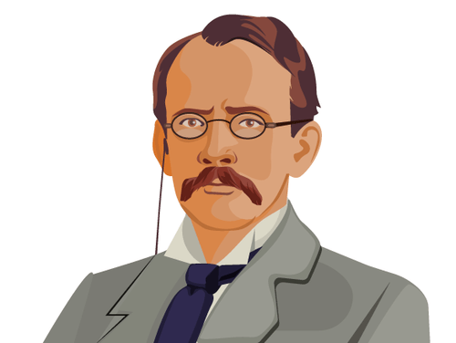
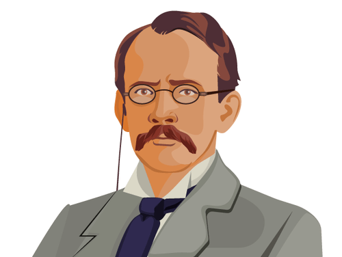

O Modelo Atômico de Rutherford
O modelo atômico de Rutherford, proposto pelo físico neozelandês Ernest Rutherford no início do século XX, revolucionou nossa compreensão da estrutura atômica. Esse modelo foi desenvolvido com base em experimentos que revelaram a existência do núcleo atômico e trouxeram à tona a ideia de um átomo com uma estrutura interna complexa.

Contexto anterior
Antes de explorarmos o modelo de Rutherford, é importante mencionar o modelo do pudim de passas proposto por J.J. Thomson. Segundo esse modelo, o átomo era uma esfera uniforme com elétrons incrustados em uma distribuição positiva. No entanto, Rutherford descobriu evidências que desafiaram essa visão.
Experimento da Folha de Ouro
O experimento mais famoso de Rutherford foi o experimento da folha de ouro. Nesse experimento, Rutherford
bombardeou uma fina folha de ouro com partículas alfa, que são partículas carregadas positivamente. Ele
esperava
que as partículas alfa passassem diretamente pela folha ou sofressem apenas pequenos desvios de
trajetória.
No entanto, Rutherford observou algo surpreendente: algumas partículas alfa eram desviadas em ângulos
maiores do
que o esperado e, em casos extremos, até mesmo refletidas de volta na direção oposta. Essas observações
contradiziam o modelo do pudim de passas e exigiam uma nova explicação.
As Ideias Principais do Modelo de Thomson
Com base em seus experimentos, Rutherford propôs o seguinte modelo atômico:
- O núcleo: Rutherford sugeriu que a maior parte da massa do átomo e sua carga positiva estavam concentradas em um pequeno núcleo central. Esse núcleo seria extremamente denso e ocuparia apenas uma fração muito pequena do volume total do átomo.
- Elétrons orbitando o núcleo: Rutherford propôs que os elétrons, com carga negativa, orbitavam em torno do núcleo, semelhante aos planetas orbitando o Sol. Essas órbitas eletrônicas mantinham os elétrons em equilíbrio com a atração eletrostática do núcleo.
Legado do Modelo De Rutherford
O modelo atômico de Rutherford foi um avanço significativo na compreensão da estrutura atômica e abriu caminho para desenvolvimentos posteriores. Embora o modelo tenha sido posteriormente refinado e aprimorado, as ideias de Rutherford forneceram a base para a compreensão da existência do núcleo atômico e da natureza das órbitas eletrônicas. A descoberta do núcleo atômico e a proposta de órbitas eletrônicas influenciaram enormemente o campo da física nuclear e da química moderna. A partir desse modelo, surgiram novas teorias sobre a estrutura e a interação dos átomos, levando a avanços tecnológicos e científicos significativos.
 
